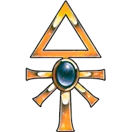
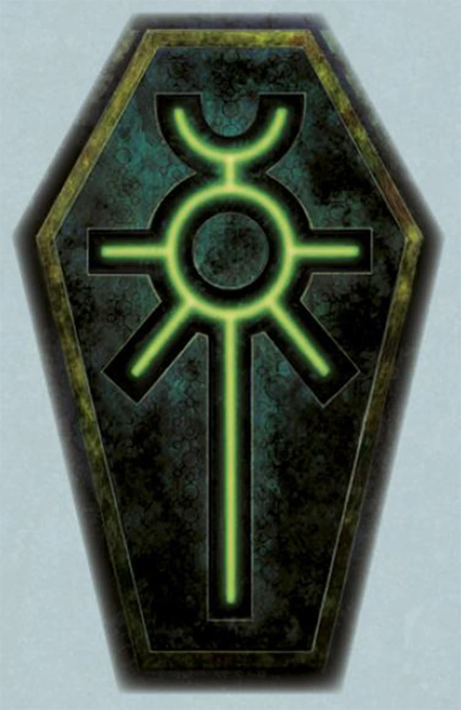
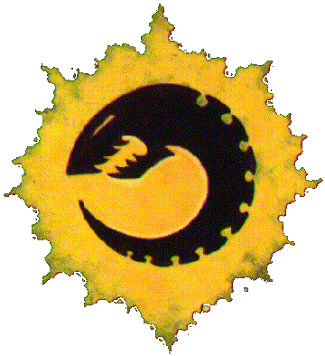
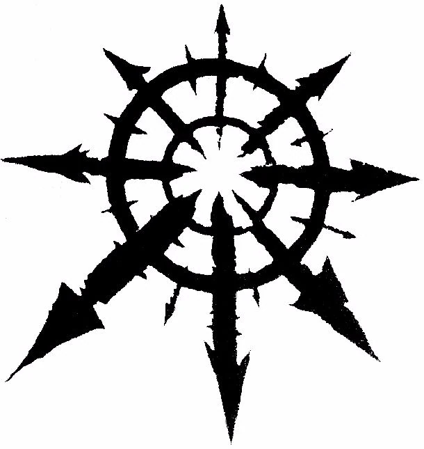

Imperium Ludzkości:
Powoli umierające imperium złożone z ksenofobicznych ludzi, indoktrynowanych przez kościół i trzymanych przy wierze w boskiego Imperatora przez inkwyzycję i armię.

Aeldari:
Rasa zwinnych wojowników, świetnie odnajdujących się w immaterium.
Orkowie:
Uwielbiające walkę, mało inteligentne, ale za to dysponujące dużą wytrzymałością i siłą fizyczną istoty, niemal niemożliwe do wyeksterminowania.
T'au:
Stosunkowo młoda, ale zaskakująco szybko rozwijająca się rasa działająca w imię Wspólnego dobra.

Nekroni:
Budzące się legiony starożytnych żywych maszyn, których jedynym celem jest ponowne zdobycie władzy nad galaktyką

Tyranidy:
Zagrożenie z poza galaktyki, insektoidy wykazujące inteligencję zbiorową, pożerające calą organiczną materię na swojej drodze.

Chaos:
Mieszkańcy immaterium oraz podwładne im istoty, które uległy ich manipulacjom.
Na koniec ja piszący tą strone zdecydowanie dłużej niż chciałem żeby mi to zajęło.